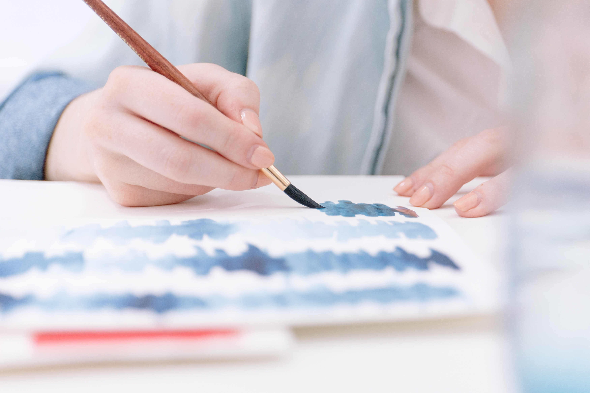

About us

Idilio is a studio located in the state of Arizona, in which Jazmin Nye, a latin artist from Colombia creates and expresses how beautiful the complex of life is, by using illustrations and words. You can find those expressions through journals, prints, stickers, and accessories created and manufactured in the USA. Idilio began in 2022 when Jazmin Nye decided to put aside her dead end routine without color to return to her childhood creativity and led her to dream of inspiring and connecting people one day.
Every phrase and stroke of her designs will recreate connections and feelings like in the old days, when no one was ashamed to open their minds and hearts. Every time you buy a product from our Idilio brand, you are helping to improve the lives of children and young people with disabilities in Colombia, as Idilio Designs will donate 10% of its profits to foundations dedicated to helping this vulnerable population. We care about what you think. We want to talk to you and be helpful so you can write to our email idiliodesigns@correo.com
